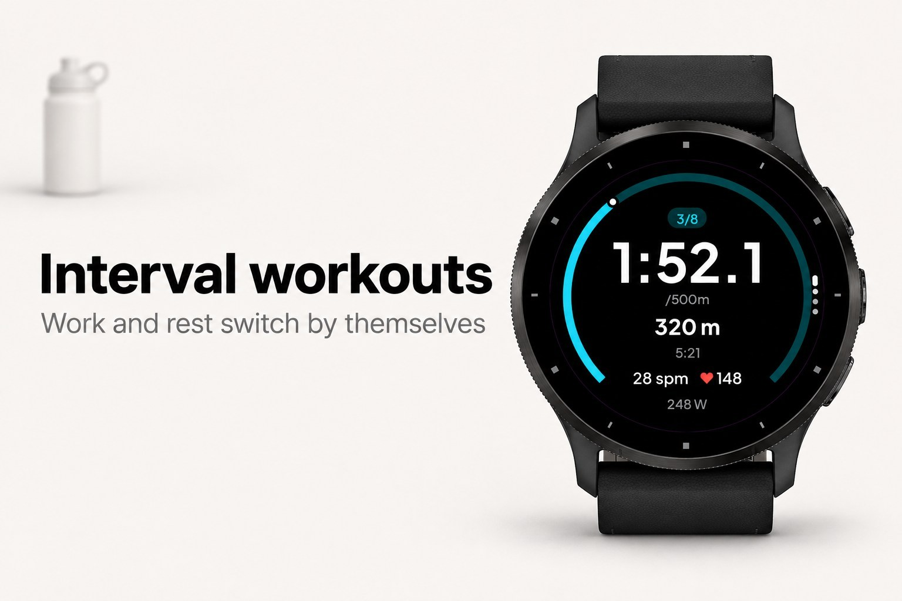
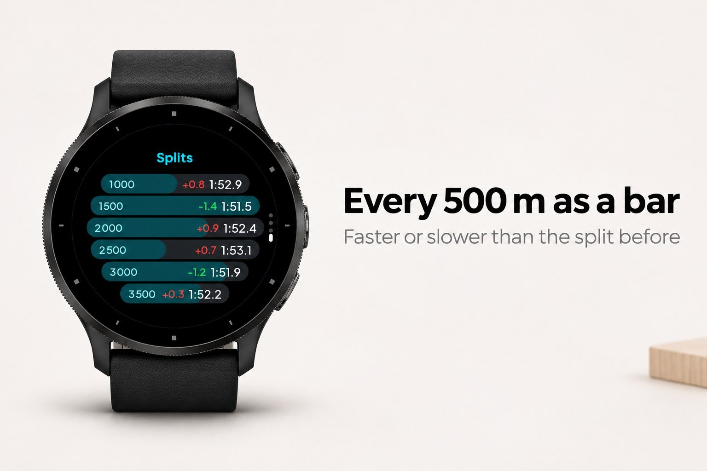
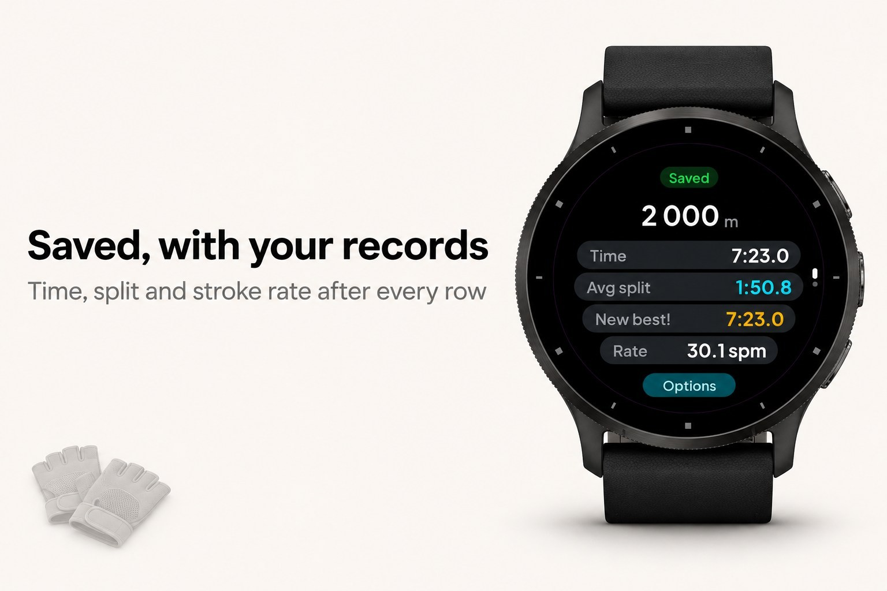
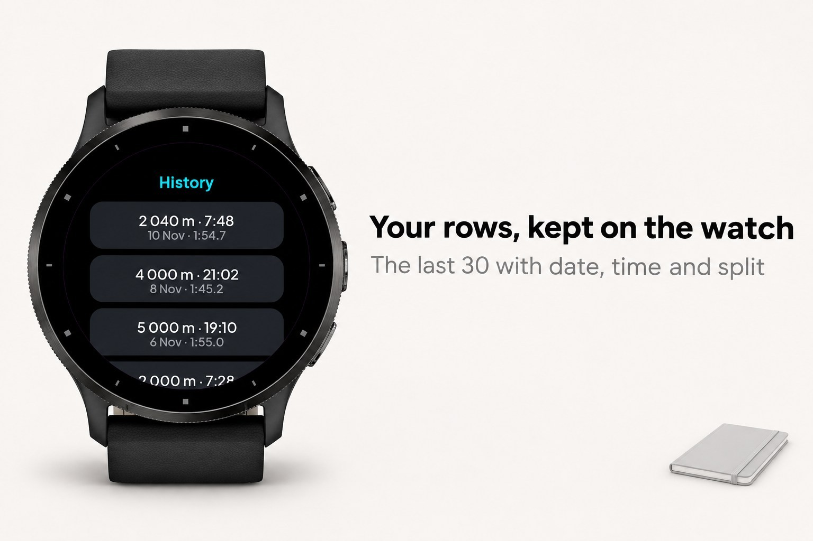

Rowcast
Rowing with PM5 and FTMS rowing machines.





Rowcast is a rowing app for your watch. It connects to your rowing machine first — a Concept2 PM5 or any rower that speaks Bluetooth FTMS — and then starts the piece: metres, split, stroke rate and watts come straight from the machine, the activity is saved in Garmin Connect with your heart rate, and when your PM5 workout ends, Rowcast stops and saves on its own. No machine? It rows on your wrist instead.
Rowcast builds a picture of your rowing out of the times you have already done. Enter a distance and the time you rowed it in, add a second one over another distance, and it fits critical speed and D' to your own points: the pace you can hold, and the metres you have on top of it. From that it works out critical power in watts with the Concept2 formula, and predicts your 2k.
What it does
- Critical speed and D' fitted by least squares to your own distances and times
- Critical power and the watts of every split, with the Concept2 formula P = 2.80/pace³
- A 2k prediction from the model, with Paul's law beside it as a second, independent estimate
- Predicted times and splits for 500 m, 1k, 5k, 6k and 10k from the same model
- Connects to your rowing machine over Bluetooth: Concept2 PM5 and every rower that speaks FTMS (the Bluetooth standard used by most connected rowers) — then the metres, split, stroke rate and watts come straight from the machine
- Every piece is saved as a rowing activity in Garmin Connect, with your heart rate, distance, power and stroke rate
- Set a goal — 500 m to 10 000 m, any distance, or a time like 20:00 — and the piece stops on its own when you reach it, with the metres to go or the clock counting down on screen
- Personal bests per distance (500 m, 1k, 2k, 5k, 6k, 10k) from pieces measured by your machine: "New best" and a long buzz when you beat it, otherwise how far off you were; a PR attempt races against your best by default
- The same goal goes onto your PM5 as a workout, so the monitor counts down with you and ends the piece at the same metre
- Stopping works like on a Garmin activity: the piece pauses and you choose Save, Resume or Discard, and the summary says clearly that it was saved
- Four pages while rowing: the live split large inside a ring that fills toward your goal, your heart rate big in zone colour, a stats page (average split, average and max power, stroke rate, strokes, metres per stroke, calories, projected finish) and your times per 500 m as bars
- Interval workouts: repeats x distance or time with a timed rest (for example 8 x 500 m, 1:00 rest). The watch switches between work and rest by itself, buzzes at every change and stops after the last interval
- Ahead or behind your plan or your best, live in seconds and in metres
- History of your last 30 rows on the watch, and a records page
- Connection help: which rowers work and what to do when none is found
- Save a measured piece as an effort in one tap, so the model learns from what you actually rowed; a goal reached on a rowing machine counts automatically
- A split plan over four times 500 metres: even, negative or race-shaped, each split with its power
- A summary after every piece, and the option to type the real metres so the distance estimate gets sharper
- The trend of your 2k prediction over time, 16 languages, and a glance with the prediction and its split
What it needs
- Two efforts over different distances to fit the model; with one, Paul's law alone still works
- Without a connected rowing machine: the accelerometer for stroke rate — distance is then estimated from your rhythm, not measured, and the app says so
- The PM5 accepts one Bluetooth connection at a time, so close ErgData or other apps before you start
- Records only count pieces measured by a rowing machine
- No phone, no account, no internet — everything is worked out on the watch
- Enduro, fenix 5, fenix 6/6S (non-Pro), Forerunner 245/645/935, Venu Sq and vivoactive 3 keep the previous screens, without intervals, history and records